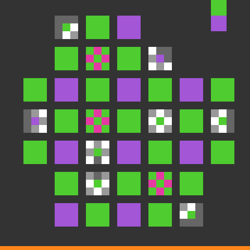
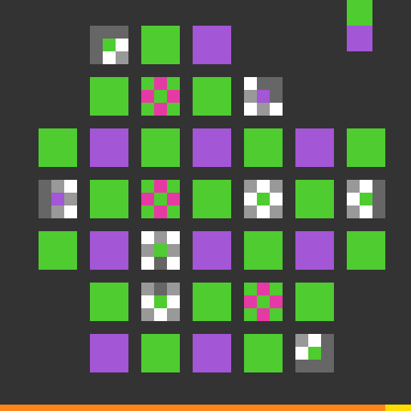

Recorded actions
Select an action to inspect its recorded effect.
Decision
Reject another normal-cell coloring experiment. Both complementary normal-cell targets have now failed. The next controlled test should probe the three new magenta cells from clean level-5 starts to learn whether they are controls, locks, or active operators.
structural_pass=true ·
causal_gate_pass=false